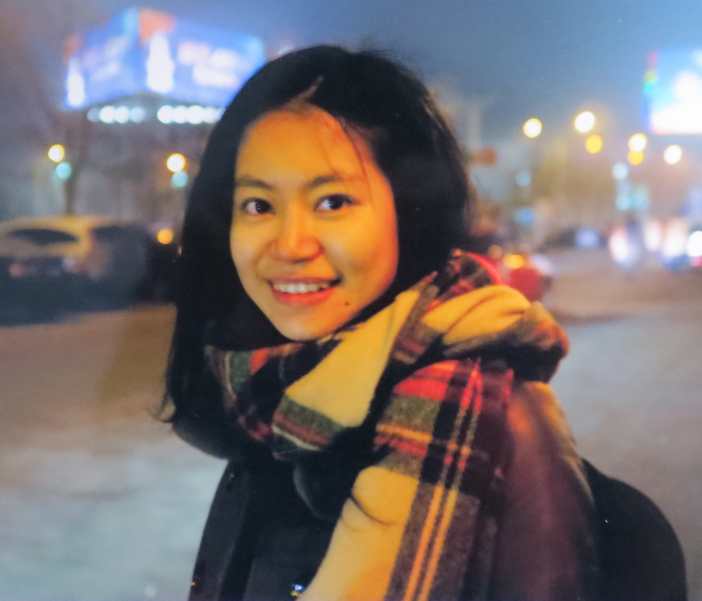

|
 |
Shuang Li
Assistant Professor
School of Data Science
The Chinese University of Hong Kong (Shenzhen)
Daoyuan Building, 508b
Shenzhen, Guangdong, China
Email: lishuang@cuhk.edu.cn
|
Biography
I am an Assistant Professor in the School of Data Science at The Chinese University of Hong Kong (Shenzhen). Previously, I was a postdoctoral fellow at Harvard University, working on mobile health with Prof. Susan Murphy.
I earned my Ph.D. in Industrial Engineering from H. Milton Stewart School of Industrial & Systems Engineering
at Georgia Tech in
2019, and earlier,
I received B.E. in Automation from University of Science and Technology of China in 2011.
[Google Scholar] [Curriculum Vitae]
I’m recruiting Research Assistants year-round and have 1~2 PhD openings starting Fall 2026. If you are interested in working with me, and with good programming skills and math background, you can contact me via email with your CV.
Research Interests
My research delves into the development of knowledge-enhanced sequential models and sequential decision tools, which prioritize interpretability
and trustworthiness in machine learning.
More specifically, my research focuses on:
Knowledge-Enhanced Sequential Models: By integrating domain-specific knowledge into machine learning algorithms, we aim to facilitate transparent decision-making processes and to create robust and reliable frameworks applicable in high-stakes systems.
Human Cognitive Process Modeling: By incorporating Theory of Mind and spatial-temporal logical reasoning into AI systems, we aim to enable effective collaboration between humans and AI.
Applications in Healthcare: We aim to apply machine learning tools to improve healthcare policies, clinical workflows, and patient outcomes through informed decision-making.
People
PhD students:
— Chao Yang (2022 Fall- ) BS: Shandong University, MS: University of Edinburgh. First-author paper: ICML 2025, UAI 2025.
— Wendi Ren (2023 Fall- ) BS: Sun Yat-sen University, MS: Georgia Institute of Technology. Second-author paper: ICLR 2024, ICLR 2025, NeurIPS 2024.
— Xinye Chen (2023 Fall- ) BS: Zhejiang University of Finance & Economics, MS: Johns Hopkins University.
— Yanwen Liu (2025 Fall- ) BS: Beihang University.
— Tianjian Zhang (2025 Fall- ) BS: Sun Yat-sen University.
Research Assistants:
— Chengzhi Cao (2022 Dec-2024 Jan) Visiting student from the University of Science and Technology of China. Initial placement: PhD student in ECE at CMU. First-author paper: NeurIPS 2023, ICLR 2024.
— Zitao Song (2022 Jun-2023 May) Master student at The Chinese University of Hong Kong (Shenzhen). Initial placement: PhD student in CS at Purdue University. First-author paper: ICLR 2024, ICML 2024.
— Yang Yang (2022 Oct- 2024 Aug) Master student at The Chinese University of Hong Kong (Shenzhen). Initial placement: PhD student at the Hong Kong University of Science and Technology (Guangzhou). First-author paper: ICML 2024, NeurIPS 2024.
— Yinghao Fu (2023 May- 2024 Aug) Master student at The Chinese University of Hong Kong (Shenzhen). Initial placement: PhD student in DS at the City University of Hong Kong. Co-first-author paper: ICLR 2024.
— Shuting Cui (2023 July- 2023 Dec) Initial placement: PhD student in Hong Kong University of Science and Technology (Guangzhou). Second-author paper: ICML 2025.
— Zhiren Gong (2025 March-2025 Aug) Initial placement: PhD student in the Nanyang Technological University.
— Yuting Yan (2025 Jan- ) BS: Beihang University. Master student at The Chinese University of Hong Kong (Shenzhen). First-author paper: NeurIPS 2025 GenAI4Health Workshop (Award Candidate).
— Wenjie Shen (2025 Aug- ) BS: University of Science and Technology of China.
Undergraduate students in The Chinese University of Hong Kong (Shenzhen):
— Minghao Mou (2022 Jun-2023 May) Initial placement: PhD student in ECE at Purdue University
— Yiling Kuang (2022 Sep-2023 May) Initial placement: PhD student in Statistics at The Chinese University of Hong Kong. First-author paper: AISTATS 2024.
— Zhaner Mou (2021 Dec-2022 May) Initial placement: Master student in Biostatisitcs at UC San Diego. Current placement: PhD student in DS at UC San Diego
— Zilin Jing (2022 May-2023 May) Initial placement: PhD student in CS at the Columbia University. First-author paper: ICML 2023 Interpretable ML in Healthcare Workshop.
— Junyu Leng (2024 Jan-2025 May) Initial placement: PhD student in ISE at the Texas A&M University.
— Shuhan Zhang (2024 March- ) First-author paper: ICLR 2025, NeurIPS 2025 (spotlight).
— Jinlong Li (2025 Jun- )
— Yongxi Feng (2025 Aug- )
— Yitong Ding (2025 Aug- )
Publications
Conference
RKHS Choice Model
Y. Yang, Z. Wang, R. Gao and S. Li.
ACM Conference on Economics and Computation (EC), 2025.
Temporal Logic Point Processes
S. Li, L. Wang, R. Zhang, X. Chang, X. Liu, Y. Xie, Y. Qi, and L. Song
International Conference on Machine Learning (ICML), 2020.
Journal
Detecting Weak Changes in Dynamic Events over Networks
S. Li, Y. Xie, M. Farajtabar, A. Verma, and L. Song
IEEE Transactions on Signal and Information Processing over Networks, Vol. 3, No. 2, June 2017.
— Finalist of 2018 INFORMS Social Media analytics Best Student Paper
Competition
Book Chapter
Workshop
Teaching
CSC 6022 Machine Learning
— Graduate level course, The Chinese University of Hong Kong, Shenzhen, Fall 2025.
CSC 6022 Machine Learning
— Graduate level course, The Chinese University of Hong Kong, Shenzhen, Spring 2025.
DDA 2001 Introduction to Data Science
— Undergraduate level course, The Chinese University of Hong Kong, Shenzhen, Spring 2025.
DDA 2001 Introduction to Data Science
— Undergraduate level course, The Chinese University of Hong Kong, Shenzhen, Spring 2024.
DDA 6060/CSC 6022 Machine Learning
— Graduate level course, The Chinese University of Hong Kong, Shenzhen, Spring 2024.
CSC 6137 Generative Models
— Graduate level course on generative models, The Chinese University of Hong Kong, Shenzhen, Fall 2023.
DDA 6060/CSC 6022 Machine Learning
— Graduate level course, The Chinese University of Hong Kong, Shenzhen, Spring 2023.
DDA 6107 Advanced Machine Learning
— Graduate level course on probabilistic graphical models and generative models, The Chinese University of Hong Kong, Shenzhen, Fall 2022.
DDA 6060 Machine Learning
— Graduate level course, The Chinese University of Hong Kong, Shenzhen, Spring 2022.
DDA 2001 Introduction to Data Science
— Undergraduate level course, The Chinese University of Hong Kong, Shenzhen, Fall 2021.
Services
Area Chair for:
Reviewer for:
ICML, NeurIPS, ICLR, AAAI, AISTATS, UAI
Journal of American Statistical Association, Annals of Applied Statistics,
IEEE Transactions on Signal Processing, IEEE Transactions on Information Theory,
Transactions on Knowledge and Data Engineering,
IEEE Transactions on Neural Networks and Learning Systems
|
{kind=link}